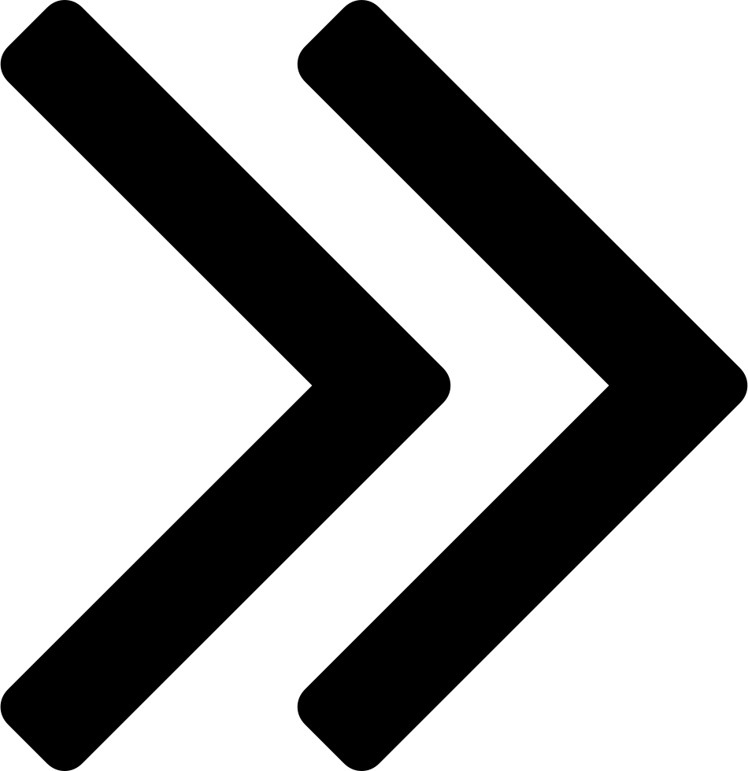

{% block content %}
<nav id="mySidenav" class="sidenav">
    <span id="btn-nav-close" href="javascript:void(0)" class="closebtn" onclick="closeNav()"></span>
    <a class="mt-5" href="#TopIllus">Illustrations</a>
    <ul>
        <a href="#TopIllusLeg">Legacy</a>
        <a href="#TopIllusModern">Modern</a>
        <a href="#TopIllusStd">Standard</a>
    </ul>
    <a href="#TopSearch">Recherches</a>
    <ul>
        <a href="#TopSearchLeg">Legacy</a>
        <a href="#TopSearchModern">Modern</a>
        <a href="#TopSearchStd">Standard</a>
    </ul>
</nav>

<div id="main">
    <!--<span id="btn-nav" style="font-size:30px;cursor:pointer" onclick="openNav()">&#9776; open</span>-->
    <span id="btn-nav-open" onclick="openNav()">  </span>


{% block javascript %}
    <script src="{{url_for('static', filename='js/side_nav.js')}}"></script>
{% endblock %}
{% endblock %}